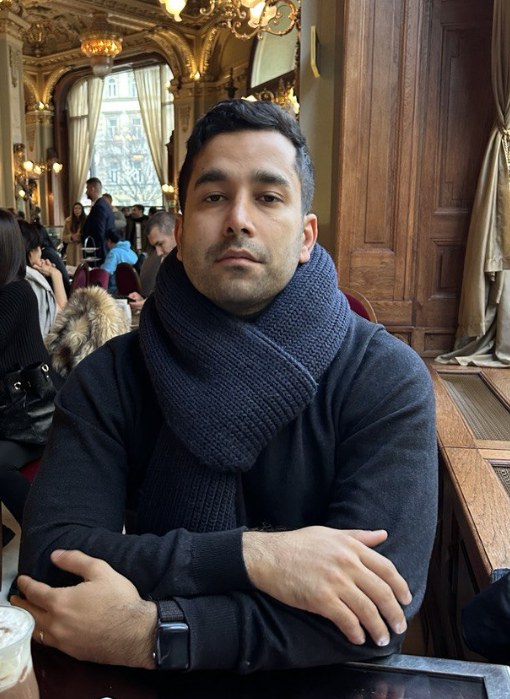

Milad
Nasiri
I take business problems that are still fuzzy and turn them into models that hold up in production.
Applied AI/ML Scientist at


0Years in AI & ML
0Projects shipped
0Countries worked in